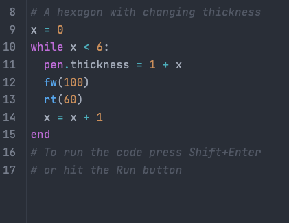
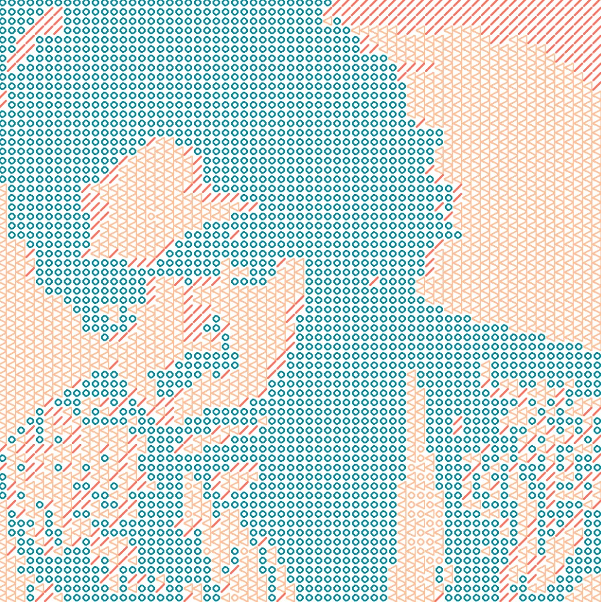

Exploring complex concepts through data visualization and simulation
A simple model to demonstrate tipping points in climate systems and their implications
How the Great Salt Lake has been shrinking over time and the environmental impact
A time lapse / computer vision analysis of the coastline of Bangladesh
Simulating how consensus, polarization, and zealots influence social networks
A visualization of the polar jet stream and temperature anomalies in the Northern Hemisphere
A simulation and visualization of the synchrony in fireflies
An agent based simulation and visualization of the Prisoner's Dilemma

A modern and pythonic implementation of the programming language Logo

An algorithm to convert an image into tiled patterns